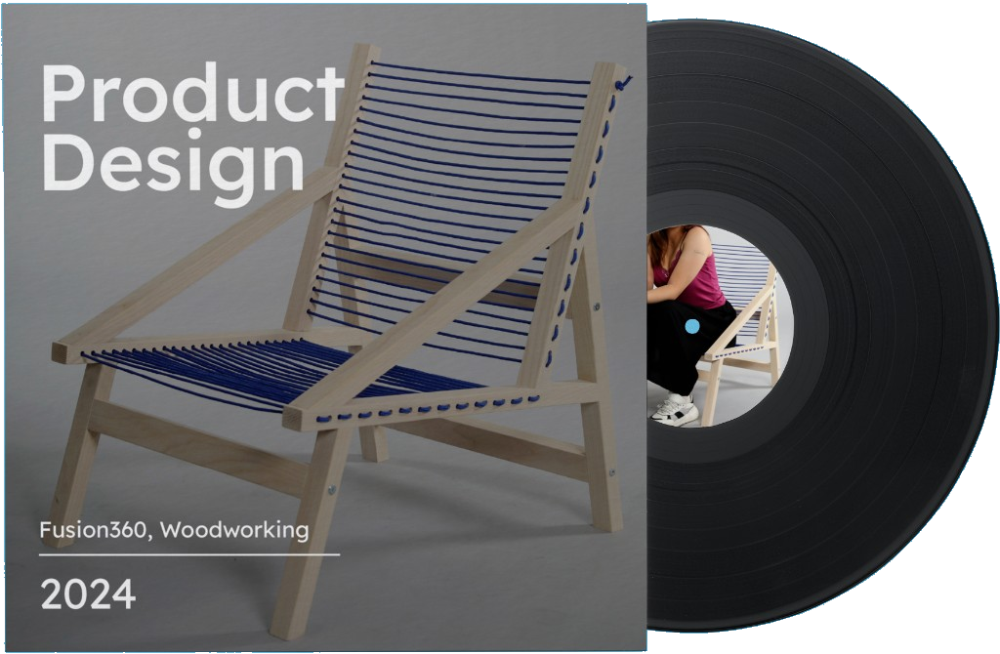
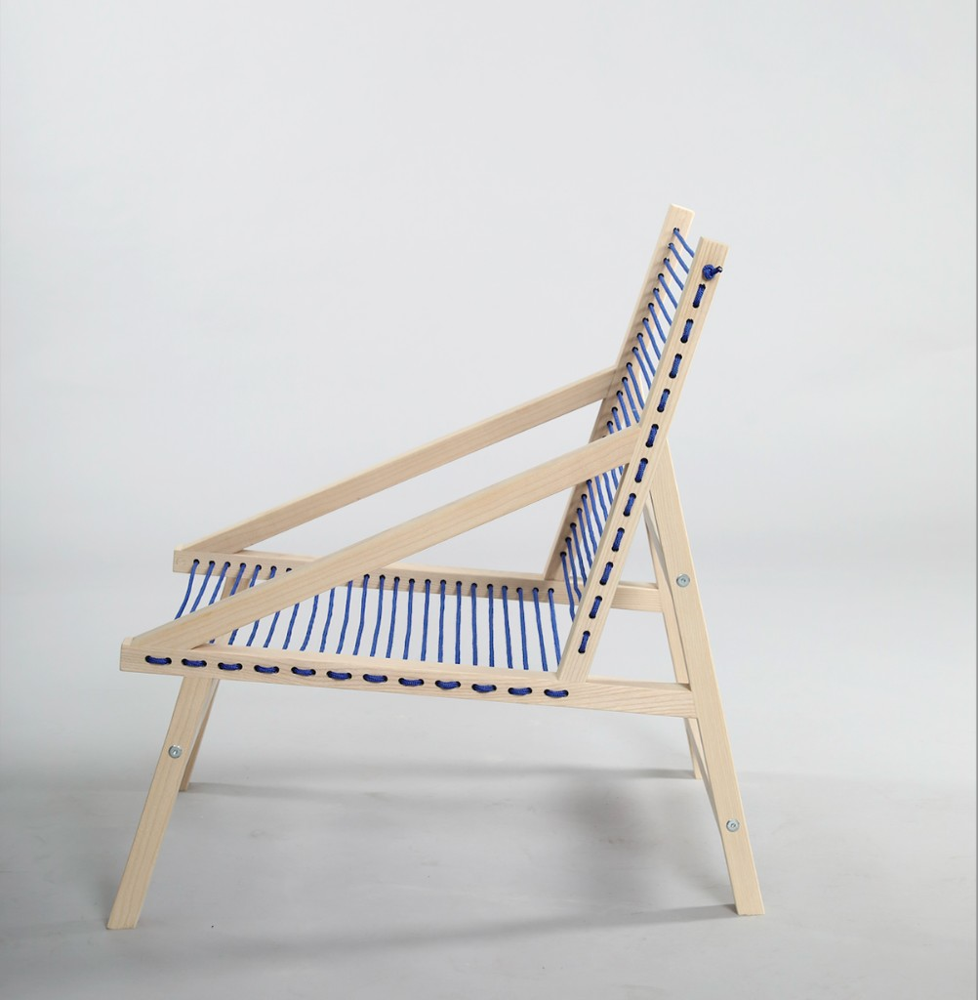
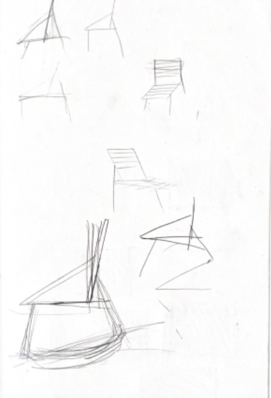
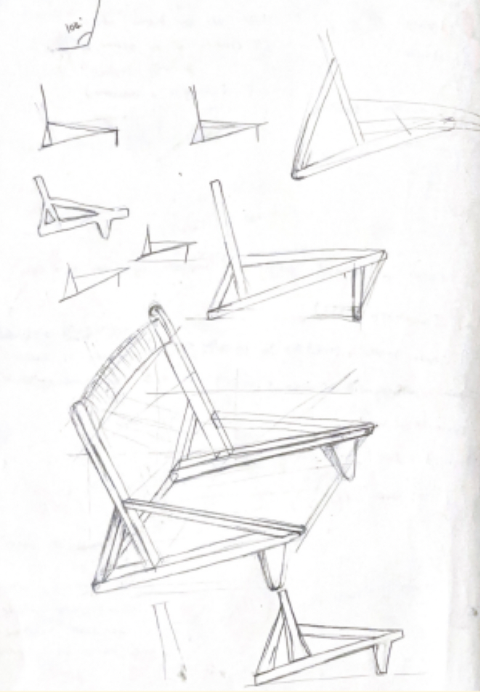
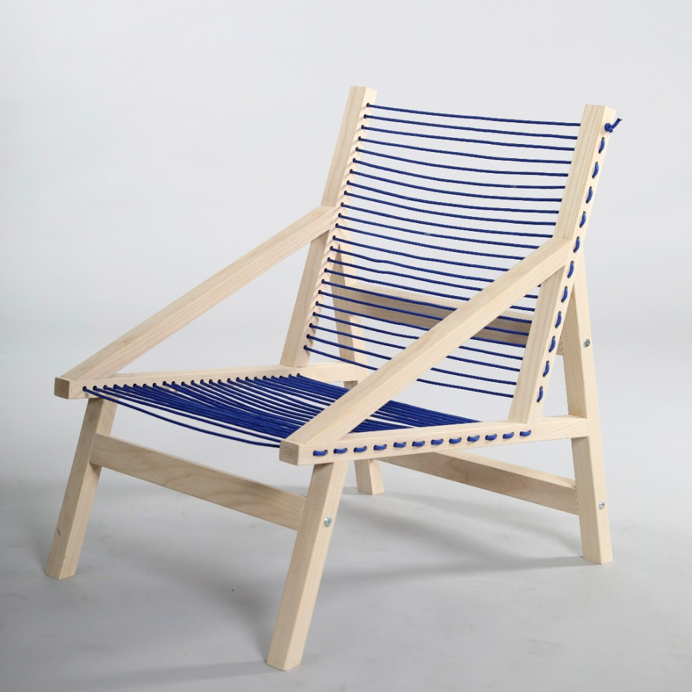

tricoard chair
(2024)
product design | 2024 summer study aboard
tools: fusion 360, woodworking

Tricoard Chair is a Scandinavian-inspired lounge chair designed for a broad range of users, from young adults to older generations. The design balances clean, minimal aesthetics with a high degree of personalization, allowing users to customize the chair to reflect their own style and space.
OVERVIEW

Tricoard is a Scandinavian-inspired lounge chair designed to be comfortable, minimal, and accessible across generations. This project was conceived during my study abroad semester in Copenhagen, Denmark, where a design field trip to Sweden introduced me to the principles and craftsmanship behind Scandinavian furniture. Seeing that design philosophy up close became the foundation for everything that followed.
The chair was designed with a wide range of users in mind, from adults to young children. Inspired in part by my five-year-old sister, I wanted to create a lounge seat that felt equally inviting and safe for a small child as it did relaxed and refined for an adult.
The design centers on the thoughtful use of wood, using the minimal amount of material necessary to achieve a sturdy, well-structured frame. The cord seating provides both flexibility and comfort, giving users a supportive yet relaxed place to settle in. Together, the wood and cord construction reflect the Scandinavian value of doing more with less — honest materials, purposeful form, and lasting quality.
RESEARCH
Immersed in Copenhagen's design culture, I visited numerous showrooms and got hands-on with some of the most iconic Scandinavian chairs available. That experience clarified what I wanted to pursue: a design that captured the quiet confidence typical of the style. Two pieces stood out as particularly influential — the Gubi MR01 and the Codolar wood chair. What drew me to both was their clean triangular structure: simple, honest, and visually grounded. That geometric logic became the structural backbone of Tricoard.
PROGRESS




Sketches for the structure of my chair
With a clear visual direction in mind, I moved into sketching to work out the overall form. This phase proved to be the most challenging part of the process for two reasons. First, designing for such a wide age range meant accounting for a significant variation in user height - a five-year-old and a full-grown adult require very different proportions to feel comfortable in the same seat. Second, achieving a sturdy structure with a minimal amount of wood required careful thinking about how the frame would bear weight without sacrificing the lightness that defines Scandinavian design.
Comfort was equally central to the design. Beyond the cord seating, which offers a flexible and supportive base, I also prioritized integrated armrests so users could fully settle in and rest - making the chair not just something to sit in, but something to lounge in.
FINAL DELIVERABLE

KEY TAKEAWAYS
Tricoard chair pushed me to think about design as a balance of constraints — material efficiency, structural integrity, and human proportion all had to work together. The process was filled with challenges, from figuring out how to accommodate such a broad range of users to nailing the precise angles and dimensions at every stage. But working through each obstacle made the final result that much more rewarding.
One of the most meaningful design decisions was centering the structure around the triangle — one of the strongest geometric forms. By leaning into that principle, I was able to build a chair that is not only visually minimal but structurally solid. Studying abroad gave me a firsthand understanding of Scandinavian design values that I could not have gained in a classroom, and that experience shaped every decision I made on this project.